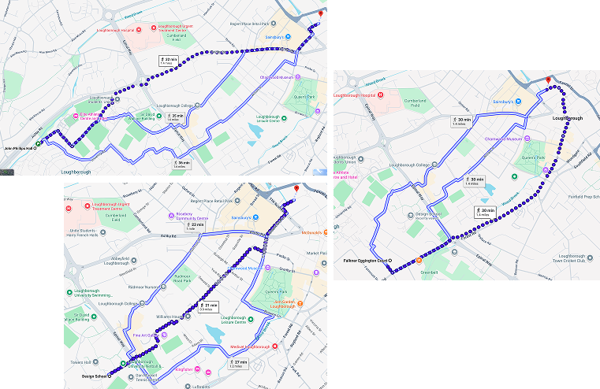
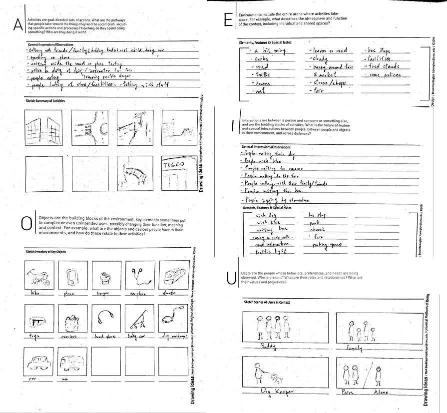
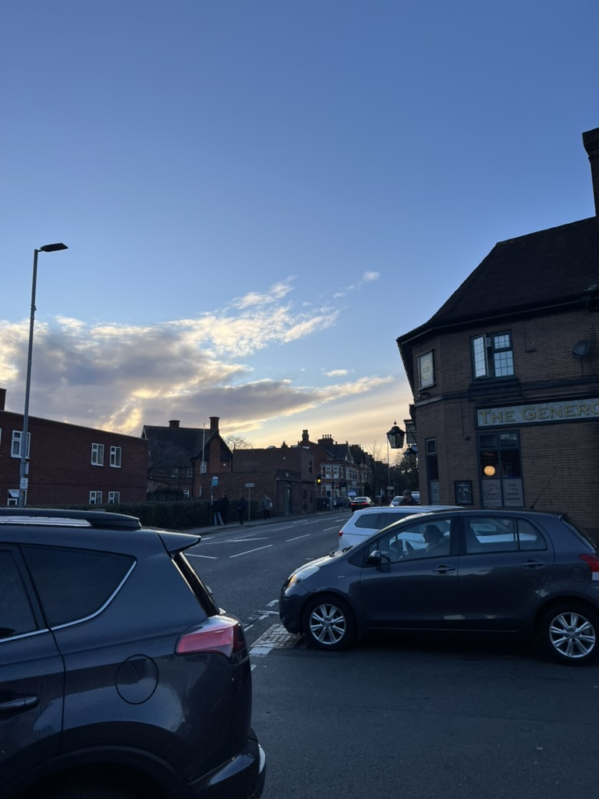
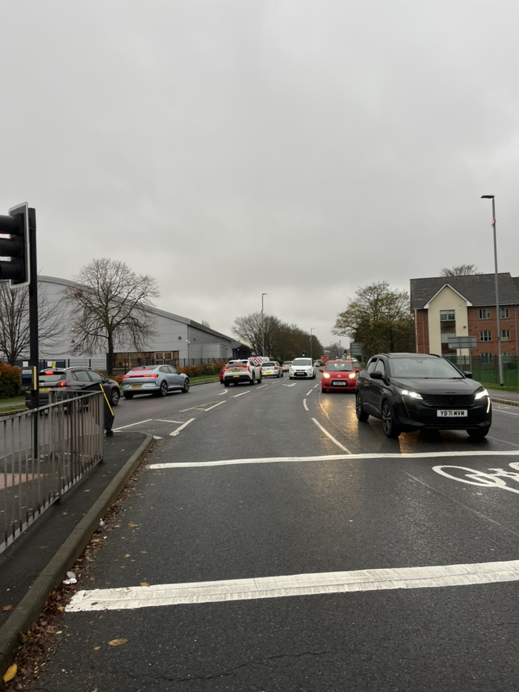

Ethics preparation
Prepared participant information sheets, blank consent forms and anonymisation approach for all materials included in the evidence log.
A research-led coursework project investigating how students travel from campus to town for grocery shopping, and how route familiarity, safety, distance and air quality shape everyday decisions.

This project responds to a university course brief focused on understanding people, behaviour and context in relation to air pollution. Rather than looking at the whole city, I narrowed the topic to one repeated everyday activity: walking from campus to town for grocery shopping.
This smaller lens made it possible to study real behaviour in context, compare what participants said with what they actually did, and uncover how practical concerns such as cost, convenience, familiarity and safety influence exposure to polluted routes.
The wider brief asked students to explore city dwellers’ attitudes and behaviours in relation to air quality, with the goal of identifying opportunities to raise awareness of, and reduce exposure to, pollution in urban life.
I focused on international students in Loughborough, comparing how they currently shop in the UK with habits shaped by their home countries, local environments and transport cultures.
Because this was a research-heavy academic project, the process began with planning: defining interview themes, preparing observation sessions, and making sure ethics, anonymity and data handling were addressed from the start.
Prepared participant information sheets, blank consent forms and anonymisation approach for all materials included in the evidence log.
Built a semi-structured interview around grocery habits, route choices, transport, product access and environmental differences between countries.
Observed participants on real grocery routes to capture physical context, environmental conditions, behaviours and decision points in motion.
Transcripts and observation notes were translated into post-it level data, then synthesised through clustering, findings, insights and HMW opportunities.
The fieldwork combined what participants said in conversation with what happened on their actual routes. This allowed the project to compare intention, memory and lived behaviour in a more grounded way.





After fieldwork, quotes and observation notes were broken into post-its and grouped into themes. This helped move from raw evidence to clearer patterns across safety, distance, cost, food access and route familiarity.


The final step was to turn synthesis into opportunity statements that respond to both the brief and the realities observed in participants’ daily routines.
How might we help people discover walking routes that are still easy to remember, but reduce exposure to busy traffic?
How might we make it easier for students to coordinate shopping together, so walking remains practical when carrying heavier loads?
How might we help people connect local products with familiar flavours, reducing dependence on expensive imported ingredients?
This project strengthened my understanding that interviews and observations reveal different types of truth. Participants could clearly explain their intentions and routines in interviews, but observation showed how behaviour changed in context due to weather, safety, tiredness or social factors.
It also taught me how important iteration is in qualitative analysis. The data initially felt fragmented and contradictory, but affinity mapping made it possible to move from scattered details to patterns, insights and actionable opportunity areas.